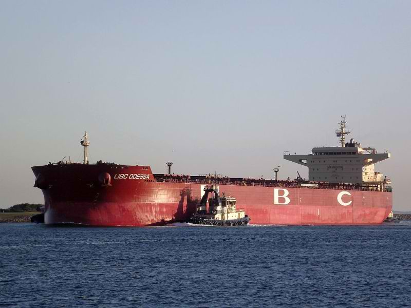

UBC Odessa
Vessel Type: Bulk Carrier
GRT: 66,368
KW: 13,560
Rank: Deck Cadet
Joined Date: 12 December 2011
Disembarked Date: 07 November 2012
Vessel Type: Bulk Carrier
GRT: 66,368
KW: 13,560
Rank: Deck Cadet
Joined Date: 12 December 2011
Disembarked Date: 07 November 2012
Vessel Type: Bulk Carrier
GRT: 19,748
KW: 7,060
Rank: Ordinary Seaman
Joined Date: 17 January 2013
Disembarked Date: 13 September 2013
Vessel Type: General Cargo
GRT: 19,128
KW: 6,810
Rank: Ordinary Seaman
Joined Date: 06 March 2014
Disembarked Date: 27 October 2014
Vessel Type: General Cargo
GRT: 22,654
KW: 7,860
Rank: Able Bodied Seaman
Joined Date: 24 January 2015
Disembarked Date: 21 July 2015
Vessel Type: Container
GRT: 9,948
KW: 9,730
Rank: Able Bodied Seaman
Joined Date: 04 January 2016
Disembarked Date: 23 October 2016
Vessel Type: Bulk Carrier
GRT: 31,882
KW: 7,390
Rank: Able Bodied Seaman
Joined Date: 29 December 2016
Disembarked Date: 27 September 2017
Vessel Type: Bulk Carrier
GRT: 34,157
KW: 7,740
Rank: Able Bodied Seaman
Joined Date: 23 February 2018
Disembarked Date: 21 January 2019
Vessel Type: General Cargo
GRT: 5,578
KW: -,---
Rank: Third Officer
Joined Date: 20 July 2019
Disembarked Date: 31 August 2020
Vessel Type: Container
GRT: 13,448
KW: -,---
Rank: Third Officer
Joined Date: 25 Dec 2020
Disembarked Date: 13 September 2021